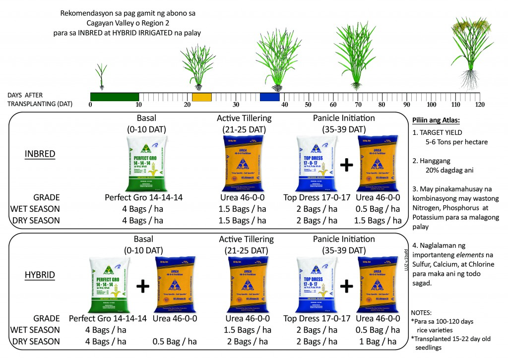

RiceHub Industry
100% Profits Towards Sustainable Organics
100% Profits Towards Sustainable Organics
The whole production process done with utmost care and thorough quality control at each stage of processing.
100%
We can supply the rice cheaper than any of your current suppliers as we get the procure paddy at very large volume at lower prices.
100%
Rice offers a wide range of health benefits and it serves as a dietary staple for more than 3.5 billion people worldwide.
100%
We provide top-notch service with dedicated support to ensure customer satisfaction at all times.
100%


Farmers and farm workers suffer from increased rates of respiratory diseases, noise-induced hearing loss, skin disorders, certain cancers, chemical toxicity, and heat-related illnesses.

Flooding can occur anywhere where water can be backed up. Rice stems have nodes, which break when there is tremendous pressure due to strong wind/rainfall occur. Cloudiness lessens the process of food-producing photosynthesis.
Learn More
The effect of El Niño on rice production depended on the strength and time of occurrence of the warm episode. During the dry season, strong, moderate and weak El Niño episodes depressed total rice production by about 22%, 6% and 0.2%, respectively.
Learn More
The effect of El Niño on rice production depended on the strength and time of occurrence of the warm episode. During the dry season, strong, moderate and weak El Niño episodes depressed total rice production by about 22%, 6% and 0.2%, respectively.
Learn More
The global rice production is highly concentrated, with Asia being the dominant region.
The top rice-producing countries include:..
Entertainment

Entertainment

Rice growers have the responsibility of ensuring that their crop doesn’t dry out at any point during the growing season. By adopting efficient irrigation methods....
Entertainment
To ensure crop health and increase in crop yields, you need to perform rice growing fertilization at just the right times and just the right rates...
Entertainment

There are several steps involved in harvesting rice, and these can be completed one at a time by hand or all at once with the use of a combine harvester....
By providing access to the latest farming techniques, tools, and technologies. Creating a network where farmers can share knowledge, experiences, and support.
Educational Resources: From articles and videos to webinars and workshops, we offer a wealth of information on sustainable farming practices, crop management, and market trends.
Innovative Tools: Access to cutting-edge agricultural technology, from precision farming equipment to software solutions for farm management.
Sustainability: Advocating for practices that ensure the health and productivity of our land for future generations.
Collaboration: Working together with farmers, experts, and organizations to create a supportive and resourceful network.